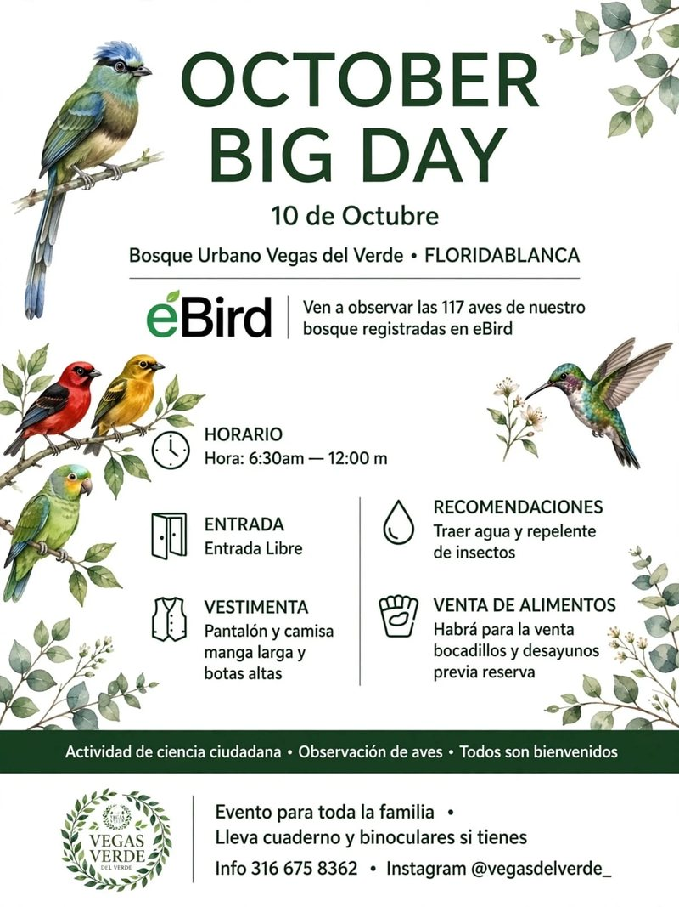
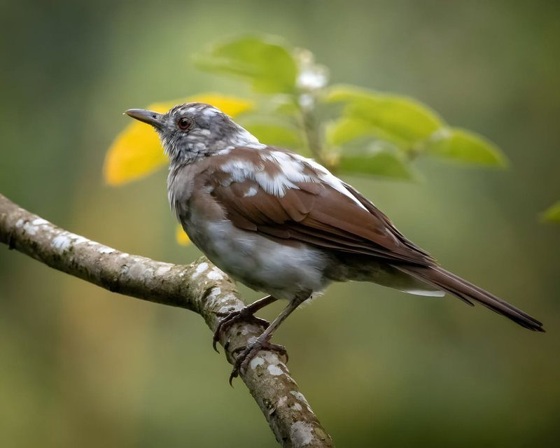
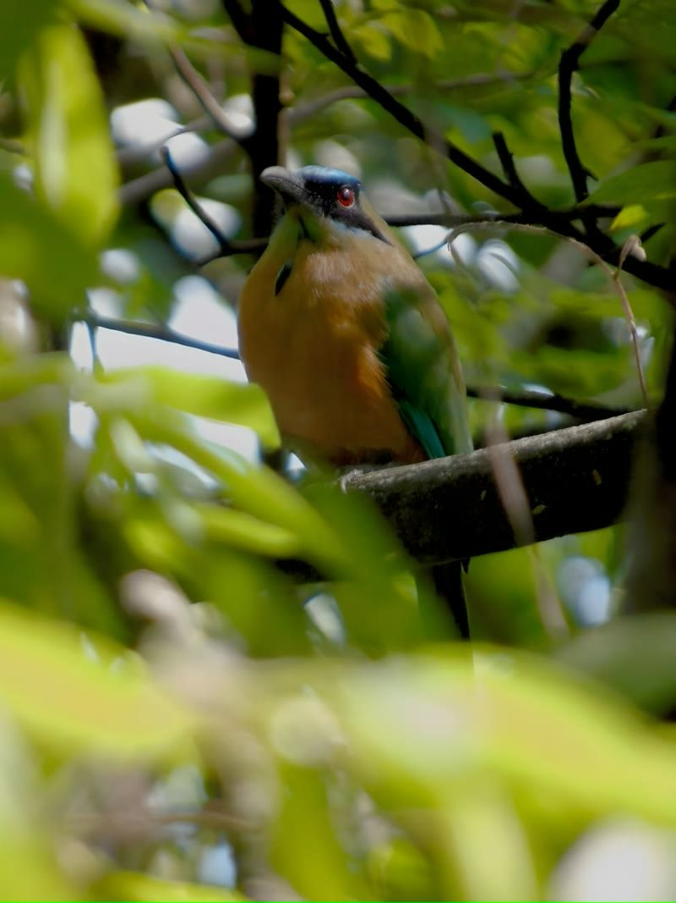
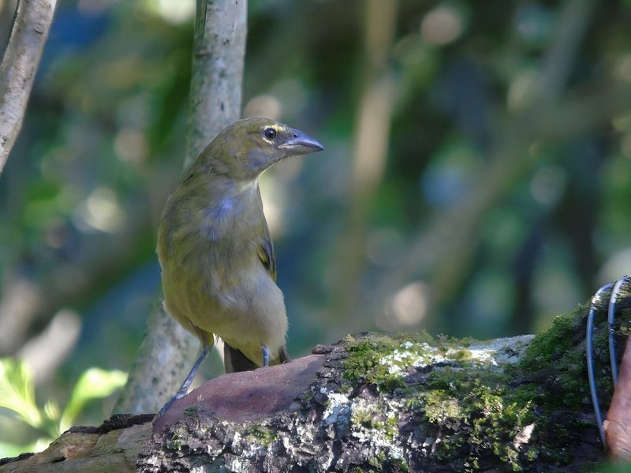

Ciencia ciudadana · Punto de observación
October Big Day en Vegas del Verde
- Cuándo
- Horario a
- Dónde Bosque urbano Vegas del Verde, Floridablanca
Entrada libre · Para toda la familia
La entrada es libre: reservar por WhatsApp solo asegura tu cupo y, si quieres, tu desayuno.


Qué es y por qué aquí
Un día para contar las aves del mundo
El October Big Day es la jornada global de observación de aves de eBird, del Cornell Lab of Ornithology. Personas de todo el planeta salen a mirar y registrar lo que ven. Vegas del Verde participa como punto de observación: un bosque urbano que se cuida como reserva.
- 117Aves de nuestro bosque registradas en eBird
- 65Especies en un solo día: Global Big Day, 9 de mayo de 2026
- 1Especie nueva para el lugar en el Global Big Day de mayo de 2025
Cifras de un día: Vanguardia, 16 may 2026 y 18 may 2025. El 117 es el total del bosque en eBird.
-

Zorzal piquinegro Foto: Francheska Salazar
-

Barranquero Foto: Carlos Serrano
-

Saltador pío Foto: Carlos Serrano
Cómo será la mañana
La jornada
-
Abrimos el bosque
Empieza la jornada. Todos son bienvenidos.
-
Toda la mañana
Observación de aves
Miras, escuchas y anotas. Lo que se ve ese día se registra en eBird: eso es ciencia ciudadana.
-
Con reserva
Desayunos y bocadillos
Hay venta de alimentos, previa reserva.
-
Cierre
Termina la jornada en Vegas del Verde.
Para disfrutarlo sin afanes
Qué llevar y cómo vestirte
-
Manga larga
Pantalón y camisa de manga larga.
-
Botas altas
Para caminar el bosque con comodidad.
-
Agua
Hidratación para toda la mañana.
-
Repelente
Para los insectos del bosque.
-
Binoculares
Si tienes, tráelos.
-
Cuaderno
Para anotar lo que veas.
Cómo llegar
Bosque urbano Vegas del Verde
Vereda Río Frío, 500 m sobre la vía Carabineros.Floridablanca, Santander, Colombia. Mapa y puntos de referencia
Lo que se ha dicho
Vegas del Verde en la prensa
Un santuario de aves en el corazón urbano.
- Vanguardia · 16 may 2026 Colombia lidera el Global Big Day 2026 y Santander alza vuelo Vegas del Verde registró 65 especies ese día y figura entre los puntos que se consolidan en Santander.
- Vanguardia · 3 may 2026 Global Big Day 2026: ¿dónde pajarear en Santander? La guía incluye a Vegas del Verde entre los puntos recomendados del departamento.
- Vanguardia · 18 may 2025 Santander vibró con el Global Big Day 2025 Quince especies y una nueva para el lugar, con más de 25 visitantes en el bosque.
- Vanguardia · 9 may 2025 Bucaramanga, con Vegas del Verde, se suma al Global Big Day Presenta el predio como refugio de aves, mariposas y árboles dentro del área urbana.
Sobre el evento global: eBird · October Big Day 2026 · October Big Day Colombia.
Antes de venir
Preguntas frecuentes
¿Tiene costo la entrada?
No. La entrada es libre. Solo pagas si pides desayuno o bocadillos.
Si la entrada es libre, ¿para qué reservo?
Para asegurar tu cupo y, si quieres, tu desayuno. Se hace por WhatsApp.
¿Necesito saber de aves?
No. Todos son bienvenidos y es un evento para toda la familia.
¿Tengo que quedarme toda la mañana?
La jornada va de 6:30 a. m. a 12 m. Puedes venir dentro de ese horario.
¿Qué ropa llevo?
Pantalón, camisa de manga larga y botas altas. Trae agua y repelente, y binoculares y cuaderno si tienes.
Te esperamos el sábado 10 de octubre
De 6:30 a. m. a 12 m. Entrada libre. Ven a contar aves con nosotros.
Reservar mi cupo